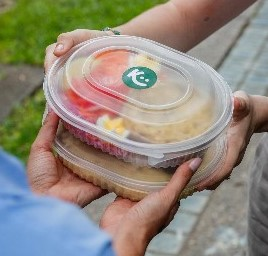

Nuestros servicios
Productos congelados
"Kuibi" se especializa en ofrecer una variada gama de productos
diseñados para quienes necesitan evitar el gluten en su dieta. Entre sus ofertas principales se
encuentran diferentes tipos de pan, como panes de sandwich y especiales que incluyen opciones como pan
de
molde. Además, cuentan con una amplia selección de
repostería, que abarca desde budines de cacao o de zanahoria hasta galletas y alfajores, todos
elaborados sin gluten
para satisfacer los antojos dulces sin comprometer la salud.
La empresa también ofrece comidas preparadas listas para llevar, tales como pastel de papa, empanadas y
tartas, ideales para quienes buscan una solución rápida y deliciosa sin gluten. Los snacks no se quedan
atrás, con opciones saludables como muffins y chips que son perfectos para una merienda
ligera.
Viandas
"Kuibi" ofrece un servicio de viandas disponible de lunes a
viernes,
diseñado para facilitar la vida diaria de quienes deben seguir una dieta sin gluten. Este servicio está
orientado a proporcionar comidas completas, equilibradas y deliciosas, adaptadas a las necesidades
dietéticas específicas de sus clientes.
Cada vianda incluye una variedad de platos preparados con ingredientes frescos y sin gluten,
garantizando tanto la seguridad alimentaria como la calidad nutricional. El menú de las viandas cambia
semanalmente para ofrecer opciones variadas y evitar la monotonía. Los platos están elaborados con
atención a los detalles, combinando sabores y texturas que aseguran una experiencia culinaria
satisfactoria.
Las viandas de "Kuibi" están diseñadas para ser prácticas y convenientes. Se entregan en
envases listos para calentar y disfrutar, lo que las hace ideales para quienes buscan una solución
rápida y saludable para el almuerzo o la cena durante la semana laboral.
Catering

"Kuibi" también ofrece un servicio de catering especializado en
eventos
y celebraciones, diseñado para atender las necesidades de quienes buscan opciones sin gluten sin
sacrificar el sabor ni la presentación. Este servicio está pensado para proporcionar una experiencia
gastronómica de alta calidad en diversas ocasiones, desde reuniones corporativas y pequeños eventos
sociales
hasta fiestas familiares.
El catering de "Kuibi" se caracteriza por su atención al detalle y su capacidad para
ofrecer menús adaptados a las necesidades específicas de cada evento. Los clientes pueden elegir entre
una amplia gama de opciones que incluyen entradas, platos principales, guarniciones y postres, todos
elaborados sin gluten. El menú es flexible y puede personalizarse para cumplir con diferentes
preferencias dietéticas y temáticas del evento.